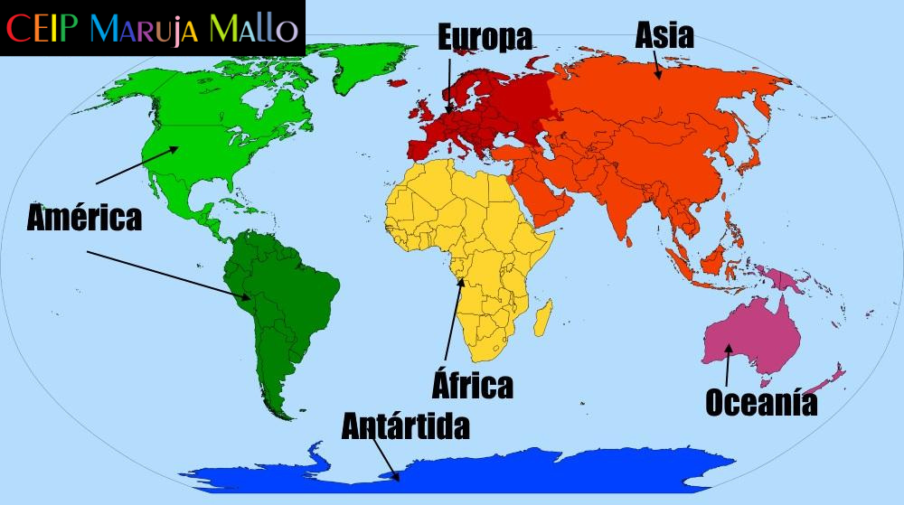
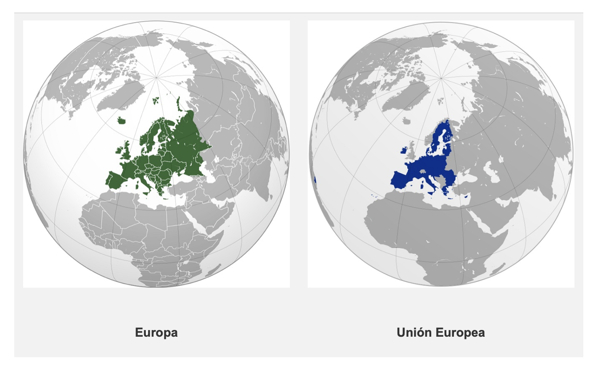

CUESTIONARIO PREVIO
Pincha en la imagen para obtener el cuestionario PREVIO.
Pincha en la imagen para obtener el cuestionario PREVIO.
Cuando hablamos de "continentes" nos referimos a extensiones de tierra que hay repartidas por nuestro planeta. Estas deben ser lo suficientemente grandes como para que sean consideradas un continente (una isla o un pequeño país, por ejemplo, no se considerarán continentes).

Los continentes que hay tradicionalmente en el mundo son 5. Pero, después de varios estudios e investigaciones realizados por expertos, se ha determinado que la Antártida también es un continente y, por tanto, la respuesta correcta a cuántos continentes hay en el mundo sería 6, ya que se incluyen todas las porciones de tierra que hay en el planeta, aunque no estén pobladas.
Aunque es cierto que la división entre continentes como Asia y Europa, por ejemplo, es imaginaria, es decir, se ha establecido una frontera política entre ambos territorios debido a las diferencias étnicas, culturales, religiosas y de idiomas.
Por tanto, tenemos que tener en cuenta que los continentes de la tierra están diferenciados, también, por motivos territoriales y políticos, por eso hay zonas como Europa y Asia o Asia y África que no están del todo bien separados pero que, igualmente, son continentes diferenciados.
Haz clic aquí para obtener la ficha del mapamundi para colorearla según los diferentes continentes.
Europa y Unión Europea son conceptos distintos. El primero hace referencia a un continente (en su sentido físico) y el segundo a una organización política.

EUROPA (50 países): Europa es un continente como lo es América, África, Asia, Antártida u Oceanía.
UNIÓN EUROPEA (27 países): La Unión Europea es una organización política compuesta por 27 países (de los 50 que hay en el continente europeo).
Obra publicada con Licencia Creative Commons Reconocimiento Compartir igual 4.0